Junit
Junit是常用的测试单元，功能十分强大，因为目前代码还十分简单，这里我们只对它进行一个简单的讨论。
这里先给出助教的一个教程
接下来是自己总结的一点东西。
Junit配置
新建test文件夹,右键点击->Mark Directory as->Test Sources Root
注意不是Test Resources Root，作者一开始点错了，搞了好半天，痛哭流涕。
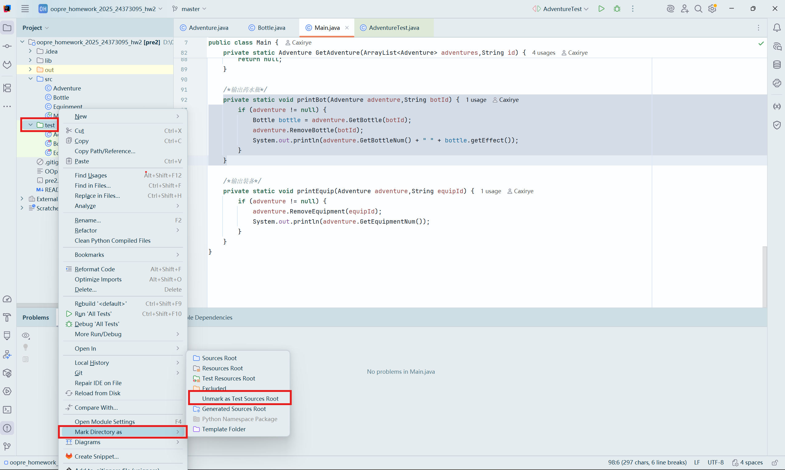
随便选一个类的文件点进去(只要不是Main就行，本门课程中不会用到对它的测试)。
右键->Go to->test->create new test
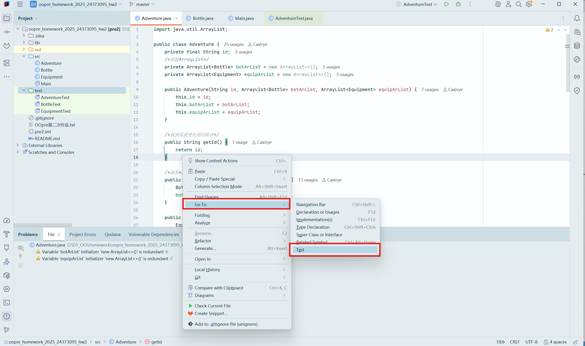
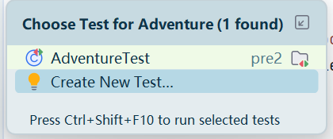
Testing Library选择Junit 4,勾选想要测试的方法,点击OK。
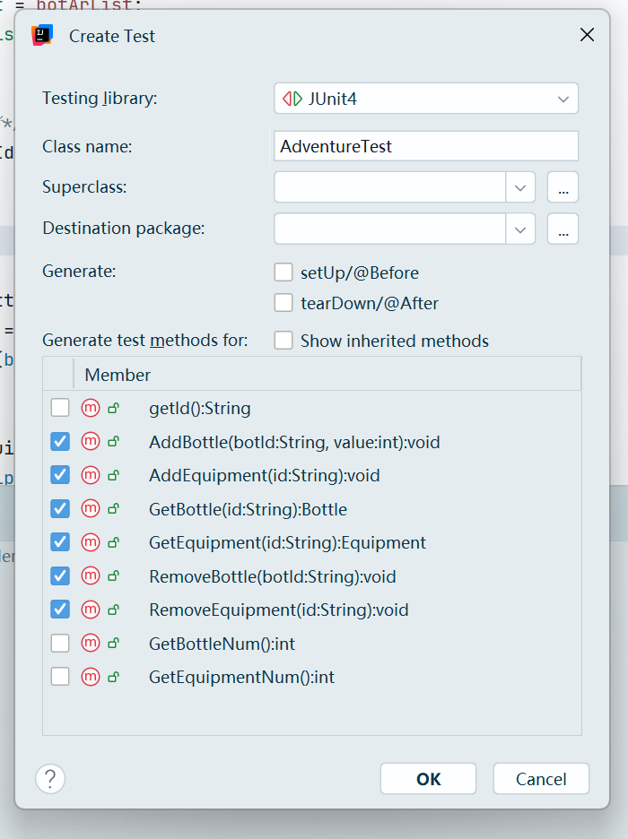
IDEA就会在test目录下自动生成一个测试文件。
这时候文件可能有警告,我们点击右上角的标识，
点击quik fix,点击添加路径,警告消除。
这个图后续再补吧hh 我实在懒得新建一个项目再截图了。
注意,保证文件开头有引用:1
2import org.junit.Test;
import static org.junit.Assert.*;
每一个测试是@Test开头的:
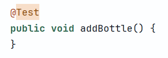
接下来我们就可以进行编写啦!
Junit编写
基本编写
每一个方法是独立的，我们需要构建基本的情况和数据。
这里给出addBottle的一个简单测试:1
2
3
4
5
6
7
8
9
10
11
12
13
public void addBottle() {
ArrayList<Bottle> list = new ArrayList<>();
Bottle b = new Bottle("1", 1);
boolean add1 = list.add(b);
assertTrue(add1);
Bottle b2 = new Bottle("2", 1);
boolean add2 = list.add(b2);
assertTrue(add2);
Bottle b3 = new Bottle("3", 1);
boolean add3 = list.add(b3);
assertTrue(add3);
}
分块运行
每个方法左边有一个三角形,点击可以进行不同种类的运行。
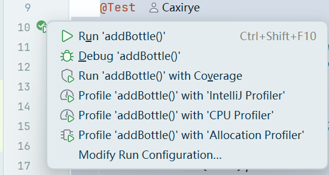
第一行的Run就是基础的运行,在遇到与预期不一致的Assert时会停下。
第三行的Run with Coverage,运行之后会有详细的数据,显示你的测试是否充分。
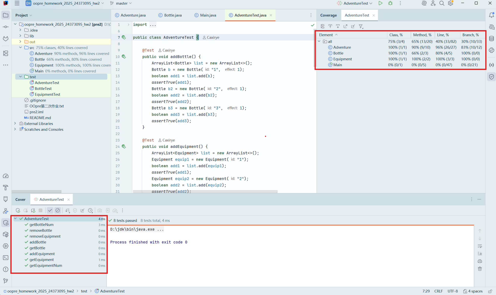
该图左下角显示是否成功运行,右侧边栏显示测试覆盖率的一些情况。
测试基例
已经测试过确认正确的方法可以在其它测试方法中使用。
比如我们已经测试过getBottle和addBottle的正确性了，就可以在removeBottle的测试中使用这两个方法:1
2
3
4
5
6
7
8
9
10
11
12public void removeBottle() {
ArrayList<Bottle> bottleArrayList = new ArrayList<>();
ArrayList<Equipment> equipmentArrayList = new ArrayList<>();
Adventure adventure = new Adventure("Alice",bottleArrayList,equipmentArrayList);
adventure.AddEquipment("BrondeSword");
adventure.AddEquipment("GoldenSword");
adventure.AddBottle("HealPotion",20);
adventure.AddBottle("HealPotion2",30);
adventure.RemoveBottle("HealPotion");
Bottle temp = adventure.GetBottle("HealPotion");
assertNull(temp);
}
checkstyle
这里突然想起来checkstyle每个项目都要配置一下,简单写一下。
File->Setting->搜索checkstyle
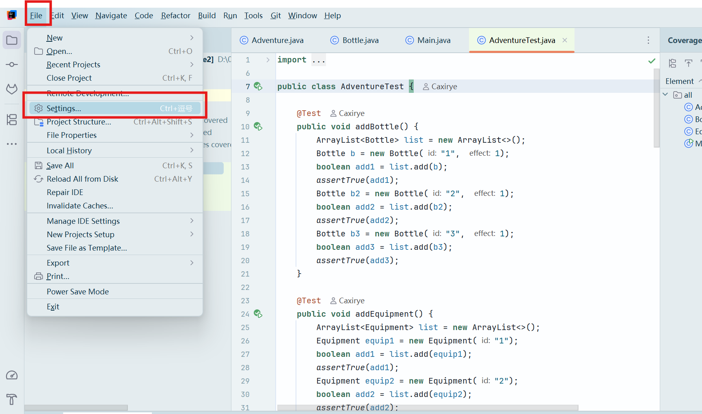
点击+ ->browse 选择xml文件所在路径,取名OO->OK
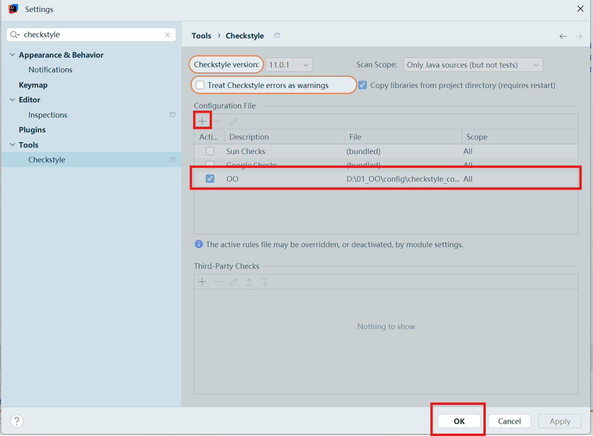
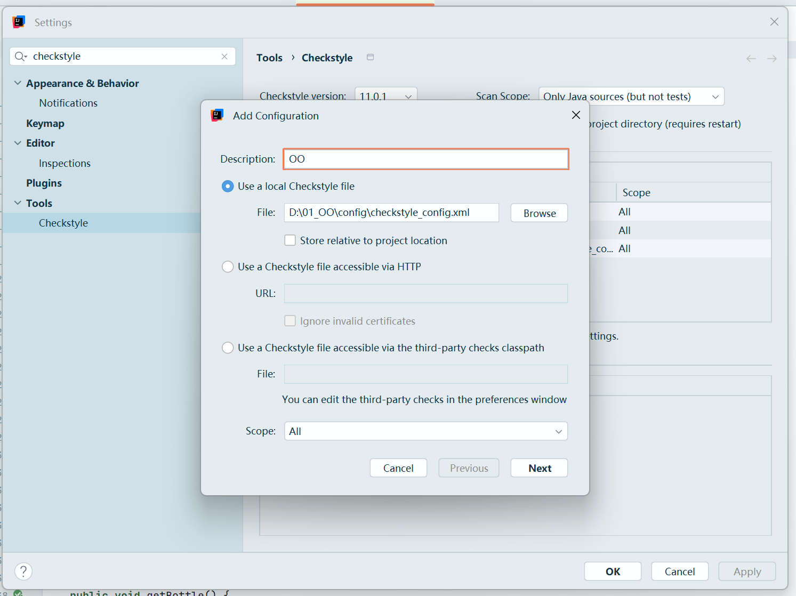
使用:左下角->check project
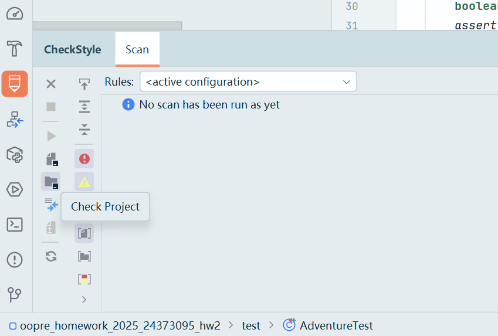